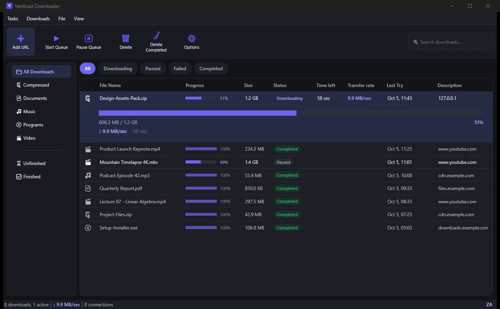
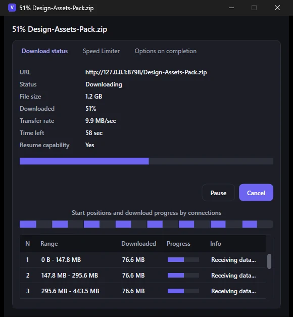

Fast
Splits each download across up to 32 connections, so a server that throttles single connections can’t hold you back as easily.
Free for Windows 10 & 11
Vantload is a free download manager for Windows. Send files and videos from Chrome in one click, choose the exact quality, and let every download run across multiple connections, all from a queue you control.
Version 1.0.3 · Windows 10/11, 64-bit · about 145 MB, everything included · no admin rights needed
Windows may show an “unknown publisher” notice because the installer isn’t code-signed yet. What to click.

Splits each download across up to 32 connections, so a server that throttles single connections can’t hold you back as easily.
No ads, no account, no subscription, no tracking. Install it and use all of it.
A real queue, pause and resume, speed limits, automatic categories, a tray icon and a Chrome extension that does the grabbing.
How it’s fast
Many servers limit how quickly a single connection can pull data. Vantload cuts the file into parts, downloads them all at once, then joins them back together, so more of your line gets used.
Illustration only. Example: a server that allows 2 MB/s per connection, on a 50 MB/s line. Real gains depend on the server and your connection, and stop growing once your line is full.

Browser extension
The Chrome extension is the remote control. When it sees a video, a Download button appears on the player. Pick a quality, and the download lands in Vantload.
On YouTube, Facebook, Instagram and many other sites, a small Download button shows up over the video that’s playing.
Choose the resolution and whether to save MP4 or MKV. Sizes are shown before you commit.
Vantload’s confirmation window opens on top of whatever you’re doing. One click on Start Download, and it’s running.
Resolutions are listed as width × height, like 1920×1080, with the file size next to each, so you know what you’re getting before it starts.
MP4 is the most compatible and plays almost everywhere. MKV keeps the best quality available without re-encoding.
Click an ordinary download link in Chrome and the extension hands it to Vantload instead. One switch in the extension popup turns that on or off.
Install the Windows app first. The extension passes downloads to it, so it needs the app running (it lives in your tray).
Features
The things a download manager should do, done without clutter.
The installer includes the .NET runtime, yt-dlp and ffmpeg, so there’s nothing to download or configure first. It installs for your user account only, so no admin rights are needed, and it removes cleanly from Windows Settings.
Screenshots
Actual screenshots of Vantload Downloader. Click one to enlarge.
Pro is an idea for the future, not something you can buy today. Vantload Free is the product, it works in full, and that isn’t changing. If you’d like to hear when Pro is ready, send a note.
Tell me you’re interestedQuestions
That screen appears for any installer that isn’t code-signed, and code-signing certificates cost money that this free project hasn’t spent yet. Click More info, then Run anyway. Vantload has no ads, no account system and no analytics, and you can read exactly what it handles in the privacy policy.
Yes. No ads, no account, no trial and no subscription. Nothing on this page is for sale.
Ordinary file links work anywhere. For videos, Vantload uses yt-dlp, which supports YouTube, Facebook, Instagram and a very long list of other sites. Only download things you have the right to download, and respect each site’s terms.
Google Chrome for now. You can also use Vantload without the extension: paste any link with Add URL.
No. The installer includes the .NET runtime, yt-dlp and ffmpeg. Just run it, then add the Chrome extension if you want one-click downloads.
Closing the window keeps Vantload in the system tray so it can catch downloads from Chrome. It can also start with Windows (you can switch that off in Options). Use Exit from the tray icon to quit it completely.
Vantload checks GitHub for a newer release about once a day. If there is one, a bar appears at the top of the window with What’s new and Update now. Nothing is installed until you click. Before running the new installer, Vantload checks it against the checksum GitHub publishes for that exact file, and it pauses any running downloads so they can be resumed afterwards. You can turn the daily check off under File → Options, or check by hand with File → Check for updates.
Windows 10 and 11 (64-bit) only, for now.
None. There are no accounts, no analytics and no tracking. Vantload talks to the sites you download from, and about once a day it asks GitHub whether a newer version exists (you can switch that off in Options). The full details are in the privacy policy.
Release history
From version 1.0.3 on, Vantload tells you when an update is available and installs it in one click. Updating by hand works too: run the newest installer over the old one. Either way, your downloads and settings are kept.
Vantload Downloader 1.0.3 for Windows 10 and 11.
About 145 MB · no admin rights needed · SmartScreen may ask you to choose “Run anyway”